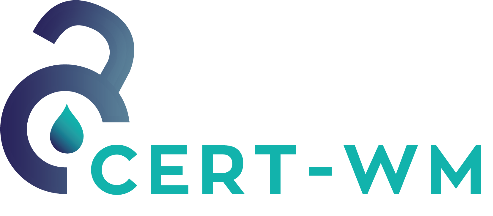

“There are a lot of powerful open-source tools on the market that are very strong in themselves at performing a specific action. But what if all these tools could be properly integrated with each other? What if these tools together form a powerful scanner to detect all kinds of vulnerabilities? That is what the developers of OpenKAT had in mind when developing this tool”